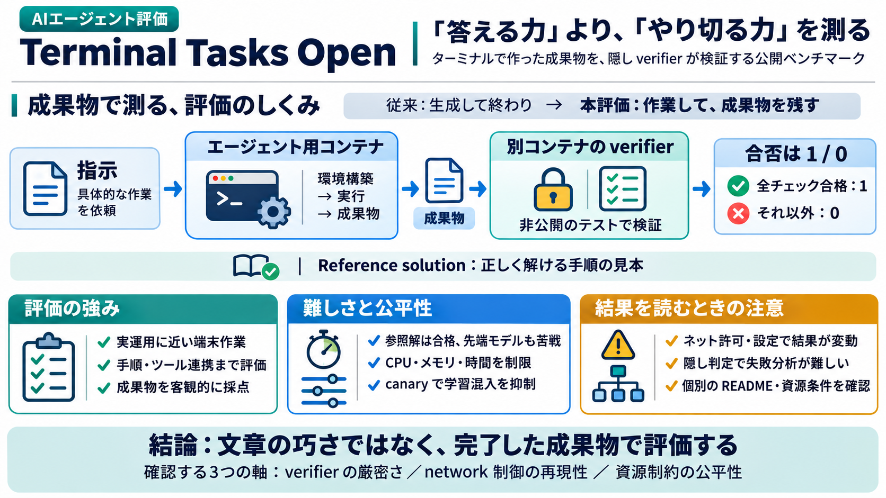

GitHub - harbor-framework/terminal-bench-1: A benchmark for LLMs on complicated tasks in the terminal · GitHub
or ``` pip install terminal-bench ``` ## Further Documentation Task Gallery Task Ideas - Browse community-sourced t…

or ``` pip install terminal-bench ``` ## Further Documentation Task Gallery Task Ideas - Browse community-sourced t…
Run command Evaluated via the Harbor evaluation harness: harbor run -d terminal-bench/terminal-bench@4.1.0. Dataset pin…
the verifier? And then actually of course obs putting agents in these tasks observing what they're doing and having agen…
# Terminal-Bench 4.0 Benchmark Laude Institute, Stanford University researchers, and open-source contributors. Its 66 t…
OpenClaw is an open-source autonomous AI agent platform that runs locally on users’ devices, functioning as an operating…